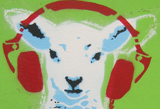

<!-- Primary header -->
<header>
  
  <p class="title">| topher lawton | information designer </p>
  <nav>
    <ul>
        <li class="active-link">home</li>
        <li><a href="about.html">about</a></li>
        <li><a href="portfolio.html">portfolio</a></li>
        <li><a href="contact.html">contact<a></li>
    </ul>
  </nav>
</header>

<!-- lightweight header -->
<!--
Used for sub-pages, including CV, project pages, etc.

-->

<header>
  
  <nav>
    <ul>
        <li><a href="index.html">home</a></li>
        <li><a href="about.html">about</a></li>
        <li><a href="portfolio.html">portfolio</a></li>
        <li><a href="contact.html">contact<a></li>
    </ul>
  </nav>
</header>

<footer>
    <p class="site-info">
    Version 1 |  Site initially created 24 July 2016 | <a href="https://github.com/HieAnon/hieanon.github.io">Code on Github</a></p>
</footer>
